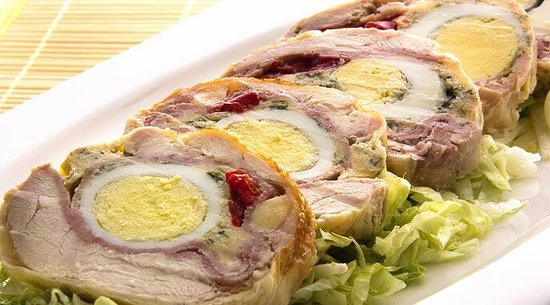

Arrollado De Pollo

Ingredientes:
1 pechuga de pollo
Sal y pimienta
100g de jamón
100g de queso
3 huevos duros
1 zanahoria cocida cortada en tiras
1 trozo de morrón cortado en tiras
Papel aluminio
Preparación:
Cortar el pollo en fetas.
Sobre el papel aluminio disponer el pollo armando un rectángulo con las fetas.
Agregar sal y pimienta a gusto.
Cubrir con el jamón y el queso.
En un borde colocar los huevos duros, las tiras de zanahoria y el morrón.
Comenzar arrollando donde colocamos los huevos y formar un cilindro envolviendo con el papel aluminio.
Llevar a horno a 190° por 1 hora.